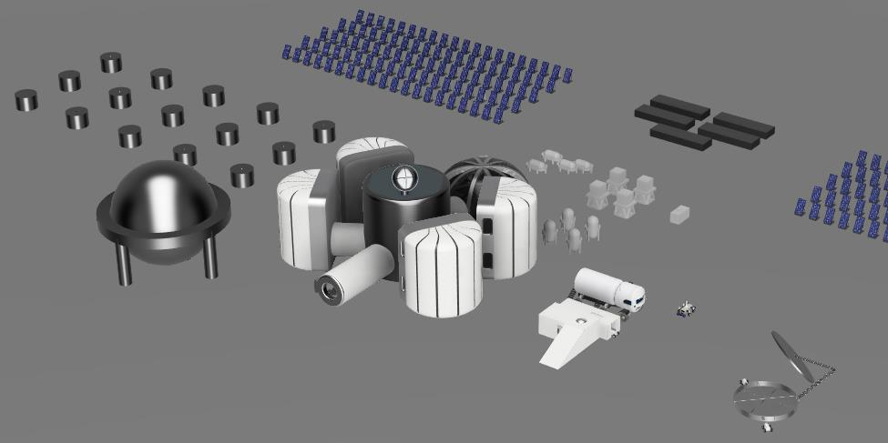
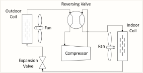
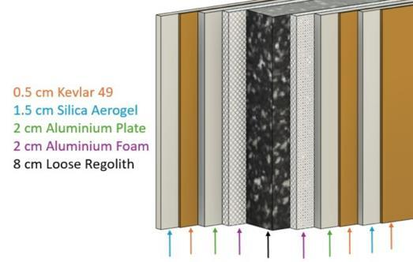

← Past projects
05 / Thermal systems / Interdisciplinary design
Lunar habitat: thermal protection & HVAC
Past projectIn an interdisciplinary engineering team designed a conceptual lunar base with calculations and literature to support design choices

Specifications
- In an interdisciplinary engineering team designed a conceptual lunar base with calculations and literature to support design choices
- Design the wall material with minimum areal density 25 𝑔/𝑐𝑚2 while respecting pressure vessel calculations
- Designed and modeled the HVAC system to be able to work at temperatures below 300 K
Contribution
- Conceptual base scored highest in the team's comparison matrix and became the base design.
- Designed a 205 mm multilayer wall: Kevlar, aerogel, aluminium, aluminium foam and regolith.
- Sized a heat pump using zone loads with an ammonia radiator loop in place of a fan to handle a 20.9 kW peak cooling load
Outcomes & Lessons Learnt
- Needed effective communication to receive information from pressure and structural engineer and deliver to electronic engineer
- Developed skill of adapting existing equipment that can be bought into specific environment to create heat pump system
- Gained experience designing HVAC system with engineering concept

